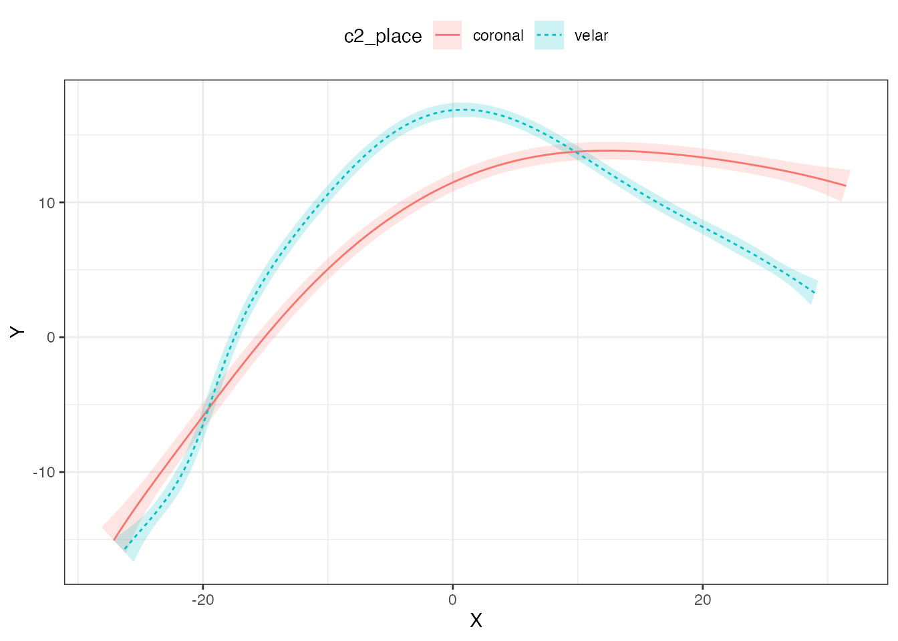
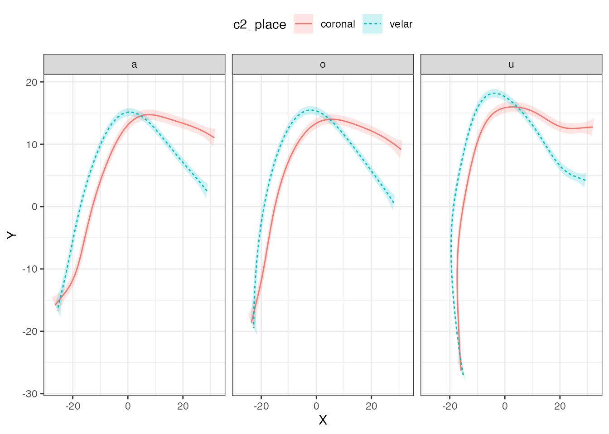
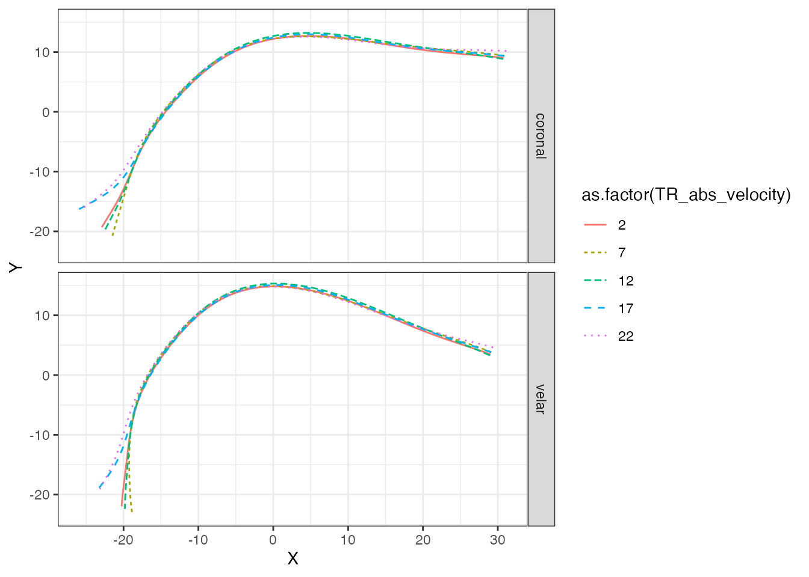
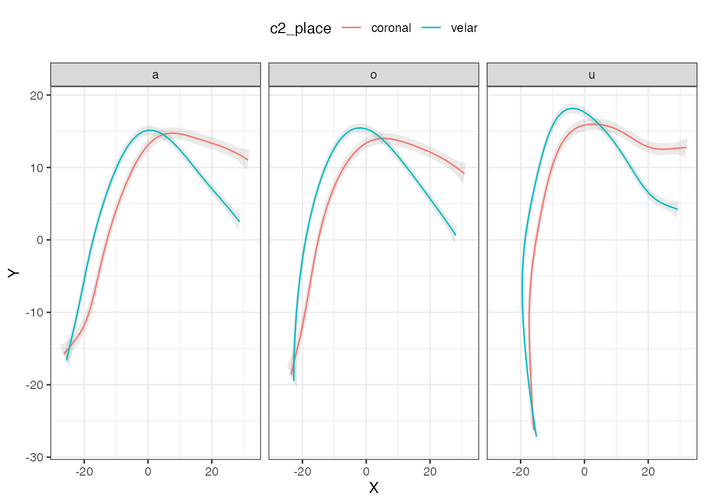

vignettes/polar-gams.Rmd
polar-gams.RmdThe package rticulate comes with a dataset containing spline data from two speakers of Italian.
library(rticulate)
data(tongue)
tongue
#> # A tibble: 3,612 x 28
#> speaker seconds rec_date prompt label TT_displacement TT_velocity
#> <fct> <dbl> <fct> <fct> <fct> <dbl> <dbl>
#> 1 it01 1.31 29/11/2… Dico … max_… 67.1 36.6
#> 2 it01 1.20 29/11/2… Dico … max_… 77.9 -7.73
#> 3 it01 1.08 29/11/2… Dico … max_… 65.9 21.1
#> 4 it01 1.12 29/11/2… Dico … max_… 64.4 8.76
#> 5 it01 1.42 29/11/2… Dico … max_… 76.9 -4.72
#> 6 it01 1.35 29/11/2… Dico … max_… 78.1 -5.68
#> 7 it01 1.07 29/11/2… Dico … max_… 69.9 -40.0
#> 8 it01 1.17 29/11/2… Dico … max_… 78.0 -7.31
#> 9 it01 1.28 29/11/2… Dico … max_… 67.1 34.5
#> 10 it01 1.10 29/11/2… Dico … max_… 75.9 -23.5
#> # … with 3,602 more rows, and 21 more variables: TT_abs_velocity <dbl>,
#> # TD_displacement <dbl>, TD_velocity <dbl>, TD_abs_velocity <dbl>,
#> # TR_displacement <dbl>, TR_velocity <dbl>, TR_abs_velocity <dbl>,
#> # fan_line <int>, X <dbl>, Y <dbl>, word <fct>, item <dbl>, ipa <fct>,
#> # c1 <fct>, c1_phonation <fct>, vowel <fct>, anteropost <fct>, height <fct>,
#> # c2 <fct>, c2_phonation <fct>, c2_place <fct>The spline data is in cartesian coordinates. The function polar_gam() converts the coordinates to polar and fits a GAM to the data. Note that, unless you have a working method to normalise between speakers, it is recommended to fit separate models for each speaker.
The polar coordinates are calculated based on the origin of the probe, which is estimated if origin = NULL using the fan lines specified with the argument fan_lines (the defaults are c(10, 25)).
If you get an error relating to lm.fit, try to change the fan_lines to values different from the default.
tongue_it05 <- filter(tongue, speaker == "it05", vowel == "a", fan_line < 38) %>% droplevels()
polar_place <- polar_gam(
Y ~
s(X, by = c2_place),
data = tongue_it05
)
#> The origin is x = 11.028937677505, y = -53.2813982686628.
summary(polar_place)
#>
#> Family: gaussian
#> Link function: identity
#>
#> Formula:
#> Y ~ s(X, by = c2_place)
#>
#> Parametric coefficients:
#> Estimate Std. Error t value Pr(>|t|)
#> (Intercept) 62.75772 0.08464 741.5 <2e-16 ***
#> ---
#> Signif. codes: 0 '***' 0.001 '**' 0.01 '*' 0.05 '.' 0.1 ' ' 1
#>
#> Approximate significance of smooth terms:
#> edf Ref.df F p-value
#> s(X):c2_placecoronal 4.576 5.614 142.7 <2e-16 ***
#> s(X):c2_placevelar 7.993 8.732 372.2 <2e-16 ***
#> ---
#> Signif. codes: 0 '***' 0.001 '**' 0.01 '*' 0.05 '.' 0.1 ' ' 1
#>
#> R-sq.(adj) = 0.934 Deviance explained = 93.6%
#> fREML = 534.93 Scale est. = 2.0697 n = 289The output model is in polar coordinates but it contains the origin coordinates so that plotting can be done in cartesian coordinates.
We can now plot the results from the model with plot_polar_smooths().
plot_polar_smooths(
polar_place,
X,
c2_place
) +
theme(legend.position = "top")
It is possible to specify multiple predictors in the model and then facet the plots.
tongue_it05 <- filter(tongue, speaker == "it05", fan_line < 38) %>% droplevels()
polar_multi <- polar_gam(
Y ~
s(X, by = c2_place) +
s(X, by = vowel),
data = tongue_it05
)
#> The origin is x = 11.0276270964655, y = -53.2776157001125.
summary(polar_multi)
#>
#> Family: gaussian
#> Link function: identity
#>
#> Formula:
#> Y ~ s(X, by = c2_place) + s(X, by = vowel)
#>
#> Parametric coefficients:
#> Estimate Std. Error t value Pr(>|t|)
#> (Intercept) 61.9700 0.0768 806.9 <2e-16 ***
#> ---
#> Signif. codes: 0 '***' 0.001 '**' 0.01 '*' 0.05 '.' 0.1 ' ' 1
#>
#> Approximate significance of smooth terms:
#> edf Ref.df F p-value
#> s(X):c2_placecoronal 5.583 6.597 3.827 0.000724 ***
#> s(X):c2_placevelar 6.925 7.784 8.564 < 2e-16 ***
#> s(X):vowela 3.825 4.746 2.219 0.042102 *
#> s(X):vowelo 2.573 3.003 2.176 0.086926 .
#> s(X):vowelu 6.835 7.774 10.861 < 2e-16 ***
#> ---
#> Signif. codes: 0 '***' 0.001 '**' 0.01 '*' 0.05 '.' 0.1 ' ' 1
#>
#> Rank: 45/46
#> R-sq.(adj) = 0.915 Deviance explained = 91.8%
#> fREML = 1986.9 Scale est. = 5.1237 n = 872Th argument facet_terms can be used to specify the terms for the facets. If you desire to facet by more then one term, just add multiple terms separated by + (for example, facet_terms = vowel + voicing; only terms that have been included in the model can be used for faceting, for more examples see the vignettes of the tidymv package).
plot_polar_smooths(
polar_multi,
X,
c2_place,
facet_terms = vowel
) +
theme(legend.position = "top")
If your model includes other smooths, or you want to have more control over the plotting, you can use the function predict_polar_gam(). This function is based on tidymv::predict_gam(), and I suggest the reader to familiarise themselves with vignette("predict-gam", package = "tidymv").
For example, let’s add a smooth to the model we used above and an interaction of this smooth with the one over X. For illustrative purposes, we will set up a smooth over TR_abs_velocity, which is the absolute velocity of the tongue root at the time point the tongue contour was extracted (note that this analysis might not make sense, and it is given here only to show how to extract the predictions). We also include a random smooth for word, which we will exclude later when we extract the predictions.
polar_2 <- polar_gam(
Y ~
s(X) +
s(X, by = c2_place) +
s(TR_abs_velocity, k = 6) +
ti(X, TR_abs_velocity, k = c(9, 6)) +
s(X, word, bs = "fs"),
data = tongue_it05
)
#> The origin is x = 11.0276270964655, y = -53.2776157001125.
summary(polar_2)
#>
#> Family: gaussian
#> Link function: identity
#>
#> Formula:
#> Y ~ s(X) + s(X, by = c2_place) + s(TR_abs_velocity, k = 6) +
#> ti(X, TR_abs_velocity, k = c(9, 6)) + s(X, word, bs = "fs")
#>
#> Parametric coefficients:
#> Estimate Std. Error t value Pr(>|t|)
#> (Intercept) 61.335 3.236 18.95 <2e-16 ***
#> ---
#> Signif. codes: 0 '***' 0.001 '**' 0.01 '*' 0.05 '.' 0.1 ' ' 1
#>
#> Approximate significance of smooth terms:
#> edf Ref.df F p-value
#> s(X) 6.795 7.314 3.878 0.000262 ***
#> s(X):c2_placecoronal 1.000 1.000 0.019 0.889360
#> s(X):c2_placevelar 3.302 3.759 2.035 0.092428 .
#> s(TR_abs_velocity) 3.764 4.396 4.666 0.000486 ***
#> ti(X,TR_abs_velocity) 23.323 28.418 5.521 < 2e-16 ***
#> s(X,word) 31.803 57.000 26.612 < 2e-16 ***
#> ---
#> Signif. codes: 0 '***' 0.001 '**' 0.01 '*' 0.05 '.' 0.1 ' ' 1
#>
#> Rank: 132/133
#> R-sq.(adj) = 0.959 Deviance explained = 96.3%
#> fREML = 1751.8 Scale est. = 2.4443 n = 872We can now obtain the predicted tongue contours. We set specific values for TR_abs_velocity using the values argument. Since we included a random smooth, which we want to remove now, we can do so by using exclude_terms. To learn how this argument works in detail, see vignette("predict-gam", package = "tidymv"). Note that you have to filter the output to remove repeated data (which arise because we are excluding a term, i.e. we set its coefficient to 0).
polar_pred <- predict_polar_gam(
polar_2,
values = list(TR_abs_velocity = seq(2, 24, 5)),
exclude_terms = "s(X,word)"
) %>%
filter(word == "paca") # filter data by choosing any value for word
polar_pred
#> # A tibble: 500 x 6
#> c2_place TR_abs_velocity word se.fit X Y
#> <fct> <dbl> <fct> <dbl> <dbl> <dbl>
#> 1 coronal 2 paca 8.54 30.8 9.04
#> 2 coronal 2 paca 8.23 29.3 9.23
#> 3 coronal 2 paca 7.91 27.9 9.40
#> 4 coronal 2 paca 7.61 26.4 9.55
#> 5 coronal 2 paca 7.31 25.0 9.70
#> 6 coronal 2 paca 7.01 23.5 9.86
#> 7 coronal 2 paca 6.71 22.1 10.0
#> 8 coronal 2 paca 6.41 20.7 10.2
#> 9 coronal 2 paca 6.12 19.3 10.5
#> 10 coronal 2 paca 5.83 17.9 10.7
#> # … with 490 more rowsAnd now we can plot using standard ggplot2 functions.
polar_pred %>%
ggplot(aes(X, Y, colour = as.factor(TR_abs_velocity), linetype = as.factor(TR_abs_velocity))) +
geom_path() +
facet_grid(c2_place ~ .)
If you want to add confidence intervals to the fitted curve, you have to get both the coordinates of the fitted curves using predict_polar_gam(model) and the coordinates of the confidence intervals with predict_polar_gam(model, return_ci = TRUE).
polar_multi_p <- predict_polar_gam(
polar_multi
)
ci_data <- predict_polar_gam(
polar_multi,
return_ci = TRUE,
)Now you can use the prediction dataset as the global data and the CI data with geom_polygon().
polar_multi_p %>%
ggplot(aes(X, Y)) +
geom_polygon(data = ci_data, aes(CI_X, CI_Y, group = c2_place), alpha = 0.1) +
geom_path(aes(colour = c2_place)) +
facet_grid(. ~ vowel) +
theme(legend.position = "top")